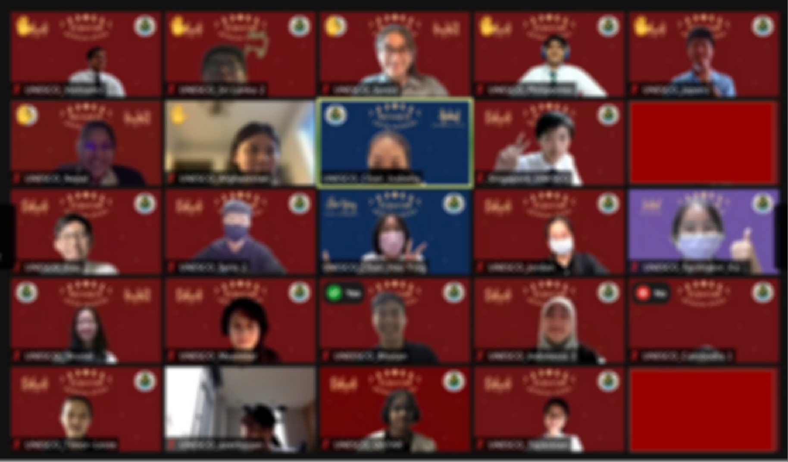
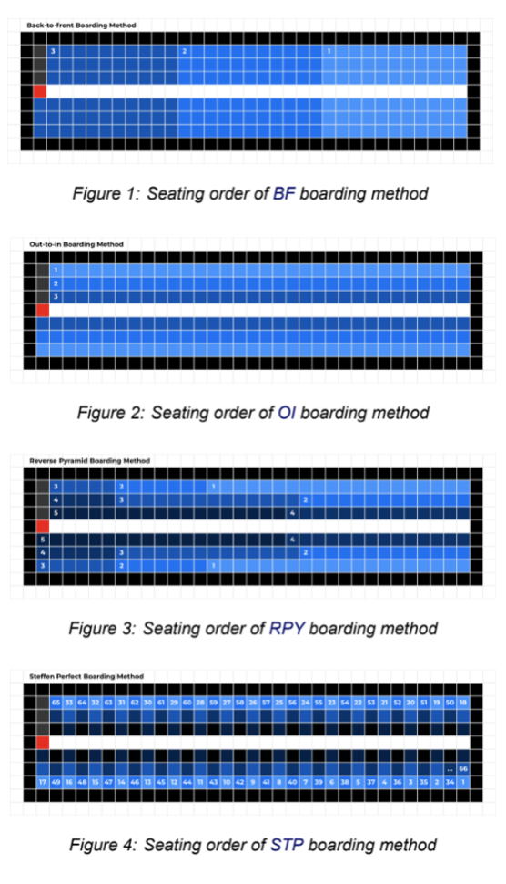
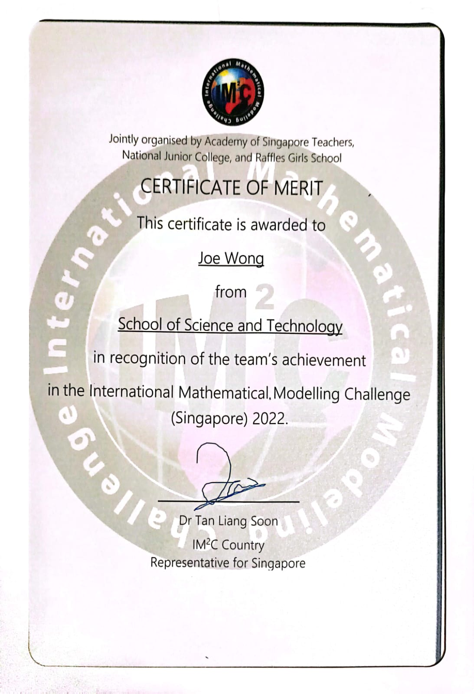
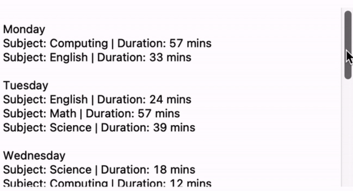
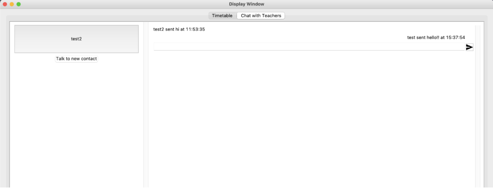
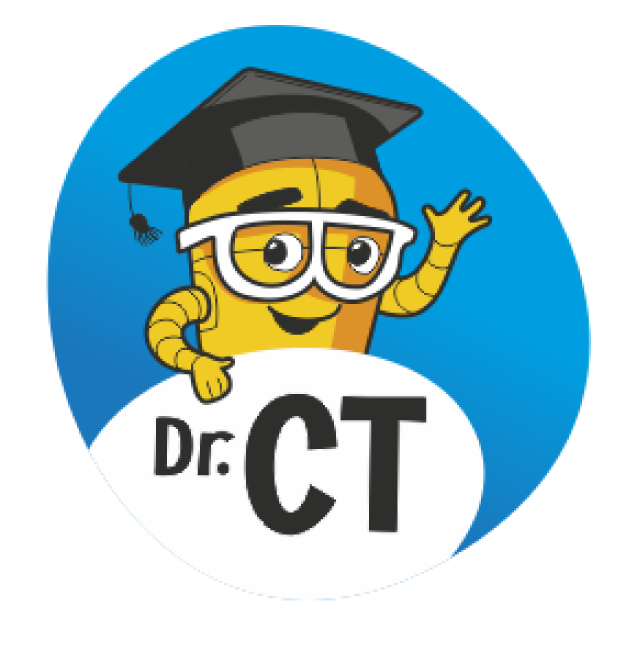
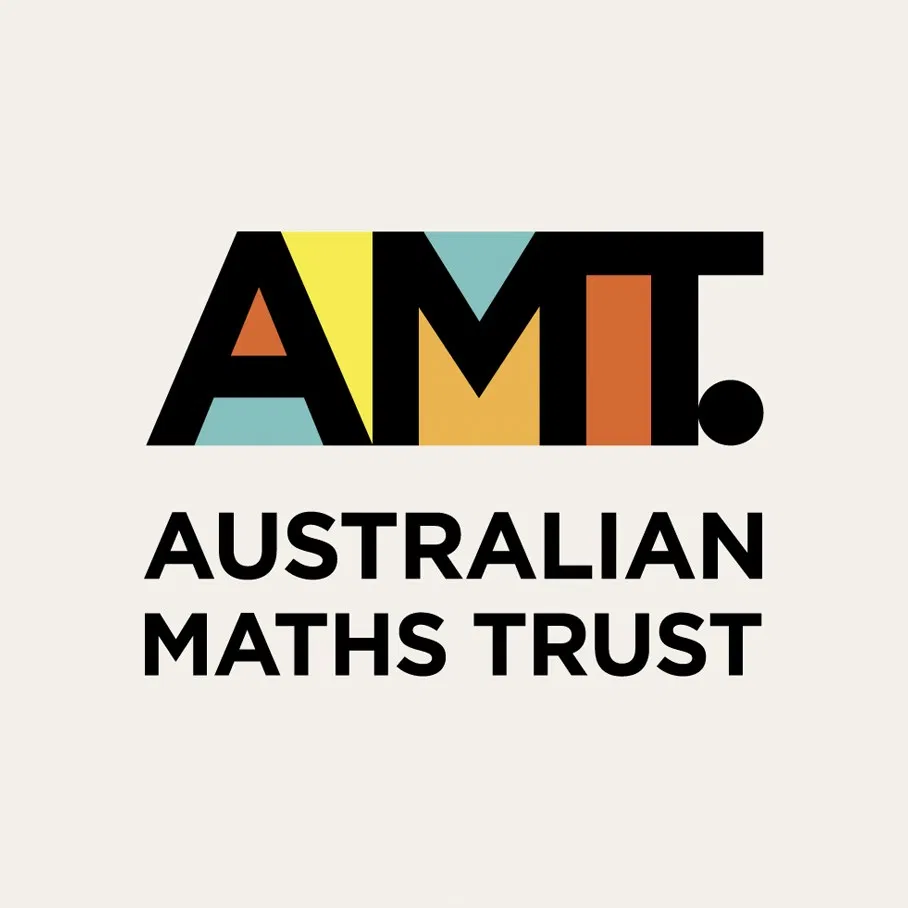

Key Achievements
Swift Accelerator Program


Swift Accelerator Program is an 8 month program where students are trained to create iOS apps using Xcode and learn simple design with Figma. After going through fundementals of building an iOS app, students form a group to create an app to benefit society. Senior consultants there helped to provide valuable insights on brainstorming and feedback on how to improve the app. Together, my group created an app called Wishey, a budgeting app which targets young adults, to allow them to track their monthly budget, expenses and income. It also provides insights on their spending by representing data in bar and pie charts. As the CTO iOS of our group, my job was to program the app's back-end software such as connecting to Firebase to send and retrieve information.
Swift Test Level 1

The Swift Test tested on basics such as Developer Tools, the Xcode User Interface, Swift Language Fundementals and iOS API Fundementals. I managed to score 720/1000 for the Swift Test and passed.
Microsoft AI900 Fundementals

After the Microsoft Imagine Cup Junior, I went on to take the Microsoft AI900 Fundemetals Test which tests on Artificial Intelligence workloads and considerations. It also tested Princples of Machine Learning, Computer Vision, Natural Language Processing and Conversational AI. I scored 871/100 and passeed the test.
Achievements
2022
SCGC Model United Nations
SCGC MUN was a fun experience, allowing me to research about world issues such as Accessibility to Education. The experience taught me to write a position paper and the proceedings in United Nations Conferences. It also allowed me to gain new friendships from people in different schools and countries. I achieved Participation Award
The International Math Modelling Challenge
 IMMC was a 5-day competition where a team of students had to discuss real-world problems and find efficient solutions to these problems using Mathematics and Computing. This year, the problem was to find the most efficient way to pack commuters into a flight. I was tasked to code a simulation of how commuters would be seated in the plane and thus calculates the total time for walking, sitting and loading baggage. Multiple challenges were faced such as the finding solutions to count the time taken due to the complex nature of the issue and my program did not work for planes of unique shapes such as the Two-Entrance, Two-Aisle plane. Despite these challenges, my team was awarded a Merit.
S4 Computing Coursework
 During my S4 Computing Coursework, me and my team designed a Desktop Application using Python which allows students to make schedules and facilitate communication between students and teachers, Chro-Know. The app used Tkinter to create windows, labels and buttons and Firebase was used to sync chat messages between accounts and store messages from different accounts. The versatile scheduling app allows students to have a better allocation of their time and increase productivity.
SUTD-SST Big D Camp


SUTD-SST Big D Camp was a three-day program where students are designated into teams and have to work together to create a prototype of an innovation to improve society. On the first day, we were taught about Design in Ethics and Sustainability in Design, allowing us to consider multiple perspectives when designing the prototype. We also learnt how to use the 3D Printer and the Laser Cutter to create objects for our prototype. On the second day, we worked on the prototype. Our prototype was a mass balance with an LCD screen used to find the amount of stock left in the shelf. It also came with an app for customers to find out the stock. I was in charge of using an Arduino to communicate with an online database AdaFruit.IO to be sent to an iOS Application in an Xcode Project. On the third day, we had to present how the prototype works, the design considerations and target audiences to professors from SUTD. Our team managed to achieve the Design Excellence Award for excellence in prototype and presentation.
2021
Computational And Algorithmic Thinking 2021


CAT featured questions which required particpants to anaylse and visualise and craft solutions to the problems. I managed to achieve a Bronze Award.
National Software Competition

NSC was had 2 segments: an individual quiz to test on basic knowledge of Python, a Capture-The-Flag competiton where particpants worked in designated teams to solve questions to earn points for their team. The event was very fruitful as I was able to meet new people from different schools. I clinched a Gold Award for the individual quiz and 12th Place for the CTF competition
Design Thinking with Robitics and Computational Thinking
DrCT allowed particpants to cultivate their creativity, logical reasoning ability, algorithmic and computational thinking skills to solve problems. I managed to achieve a Merit Award.
Microsoft Imagine Cup Junior

Microsoft Imagine Cup Junior allows students to innovate and find solutions to real-world problems using technology and artificial intelligence (AI). As a team, we had to craft out a solution and a presentation regarding the workings behind our solution. We achieved a Participation Award.
CSA-Cisco Youth Cyber Challenge 2021
CSA-Cisco Youth Cyber Challenge was a Capture-The-Flag competition which features questions about Open Source Intelligence (OSINT), Encryption and Decryption and Flags hidden in webpages. This competiton was very fun as it felt like a scaveneger hunt quest to find the different flags online. I achieved a Participation Award.
42nd International C. B. Paul Science Quiz

C. B. Paul Science Quiz is a test with questions on Biology, Physics, Chemistry and Computing. I achieved a Bronze Award.
2020
SSSC NSG Floorball Championships C Division
Represented under Special Provision
Singapore and Asian Schools Mathematical Olympiad

SASMO is a Math Olympiad Competition with challenging questions. It helped me to develop my critical and creative thinking skills to solve the problems. This year was slightly more interesting as the competition was conducted at home. I managed to acheive the Bronze Award.
2019
Ace Of Coders


Ace of Coders is a competition where we code a program to defeat
other opponents in a fantasy gaming environment, CodeCombat.
It was a rush of excitement when we see the program we have set up
defeating other teams.
My team managed to clinch 3rd Place.
Singapore and Asian Schools Mathematical Olympiad

SASMO is a Math Olympiad Competition with challenging questions. It helped me to develop my critical and creative thinking skills to solve the problems. I managed to acheive the Bronze Award.
Australian Mathematics Competition
AMC was a moderately challenging Math Olympiad Competition with a variety of questions which tackle fundemental math understanding on a deeper level. I managed to acheive the Merit Award.
2018
4th National Coding Competition

The 4th National Coding Competition allows users to use Scratch, a block-based programming language, to code a game with the theme related to "Living with Robots" I created an animation on modern society and how society has benefited with robots, such as cooking and doing simple household chores. I achieved a Silver Award.
Singapore Mathematical Olympiad for Primary Schools

Singapore Mathematical Olympiad for Primary Schools was very challenging, with multiple questions requiring you to think out of the box to generate solutions. I achieved a bronze for this compeition.
Raffles Institution Primary Mathematics World Contest

Raffles Institution Primary Mathematics World Contest tested on fundementals of Mathematics using Higher Order Thinking Questions. I managed to acheieve Credit with a percentile of 83.1.
2017
National Mathematical Olympiad of Singapore

National Mathematical Olympiad of Singapore. I achieved Honourable Mention.
2016
Singapore Botanic Gardens On-the-Spot Poetry and Photograph Competition

Singapore Botanic Gardens On-the-Spot Poetry and Photograph Competition was an exciting competition. In the first segment, we walked around Botanic Gardens and took pictures of the flora and fauna around us. After lunch break, we had to choose a photograph we had taken and write a poetry about it. It was fun letting my imagination go wild and using vivid language to describe the scenery around me. However, I did not manage to win anything but regardless, was a fun exprience.